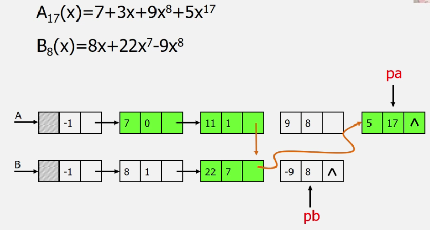
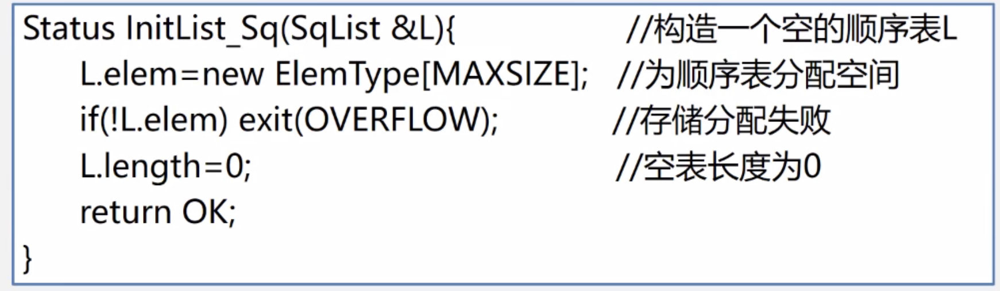

2.1 线性表的定义和特点
线性表(Linear List)是具有相同特性的数据元素的一个有限序列
- 同一线性表中的元素必具有相同的特征，且互为线性关系
- 有且仅有一个开始结点、一个终端结点，内部结点均有且仅有一个直接前趋和一个直接后继
2.2 案例引入
- 多项式可以用数组的形式来表示，但对于稀疏多项式将会造成存储空间很大的浪费，可以每一条元素记录多个数据项
- 顺序存储结构存在问题：存储空间分配不灵活，运算的空间复杂度高
- 此处对于多项式的加法可以采用链式结构

- 选择适当的存储结构，实现此存储结构上的基本操作并利用基本操作完成功能
- 线性表中数据元素的类型可以是简单类型，也可以是复杂类型
- 基本操作有很大相似性，不必一对一写程序
2.3 线性表的类型定义

基本操作有：
- InitList(&L), DestroyList(&L), Clear(&L)
- ListEmpty(L), ListLength(L)
- GetElem(L,i,&e), LocateElem(L,e,compare())
- PriorElem(L,cur_e,&pre_e), NextElem(L,cur_e,&next_e)
- ListInsert(&L,i,e)
- ListDelete(&L,i,&e), ListTraverse(&L,visited)
2.4 线性表的顺序表示和实现

- 应当追求依次存储，地址连续，没有空缺
- 可以由某个元素的地址，计算出其他元素的地址
LOC(ai)=LOC(a1)+(i−1)∗t
具体实现：

- Elem Type是你所需数据元素的类型，可以是已经有的，也可以是结构体
- 数组可以静态分配，也可以动态分配
1
2
3
4
5
6
7
8
9
10
11
12
13
14
15
16
17
18
19
20
21
|
typedef struct{
ElemType data[Maxsize];
int length;
}Sqlist
typedef struct{
ElemType *data;
int length;
}Sqlist
Sqlist L;
L.data=(ElemType*)malloc(sizeof(ElemType)*Maxsize);
|

2.4 补充：C++中的参数传递

例子1：没变化

例子2：变化了

1
2
3
4
5
6
7
8
9
10
11
12
13
14
15
16
17
18
19
20
21
22
23
24
25
26
27
28
29
30
31
32
33
34
| #include <iostream>
#include <string>
void swap(float *m, float *n){
float t;
std::cout<<*m<<'\t'<<*n<<'\n';
std::cout<<m<<'\t'<<n<<'\n';
t=*m;
*m=*n;
*n=t;
std::cout<<*m<<'\t'<<*n<<'\n';
std::cout<<m<<'\t'<<n<<'\t'<<t<<'\n'<<'\n';
}
int main()
{
float a,b,*p1,*p2;
std::cin>>a>>b;
p1=&a;p2=&b;
std::cout<<p1<<'\t'<<p2<<'\n'<<'\n';
swap(p1,p2);
std::cout<<a<<'\t'<<b<<'\n';
std::cout<<p1<<'\t'<<p2<<'\n';
}
3 5
0x7f3675add6f8 0x7f3675add6fc
3 5
0x7f3675add6f8 0x7f3675add6fc
5 3
0x7f3675add6f8 0x7f3675add6fc 3
5 3
0x7f3675add6f8 0x7f3675add6fc
|
例子3：没变化

1
2
3
4
5
6
7
8
9
10
11
12
13
14
15
16
17
18
19
20
21
22
23
24
25
26
27
28
29
30
31
32
33
34
| #include <iostream>
#include <string>
void swap(float *m, float *n){
float *t;
std::cout<<*m<<'\t'<<*n<<'\n';
std::cout<<m<<'\t'<<n<<'\n';
t=m;
m=n;
n=t;
std::cout<<*m<<'\t'<<*n<<'\n';
std::cout<<m<<'\t'<<n<<'\t'<<t<<'\t'<<*t<<'\n'<<'\n';
}
int main()
{
float a,b,*p1,*p2;
std::cin>>a>>b;
p1=&a;p2=&b;
std::cout<<p1<<'\t'<<p2<<'\n'<<'\n';
swap(p1,p2);
std::cout<<a<<'\t'<<b<<'\n';
std::cout<<p1<<'\t'<<p2<<'\n';
}
3 5
0x7af8d56def88 0x7af8d56def8c
3 5
0x7af8d56def88 0x7af8d56def8c
5 3
0x7af8d56def8c 0x7af8d56def88 0x7af8d56def88 3
3 5
0x7af8d56def88 0x7af8d56def8c
|
例子4：引用类型做形参，针对大规模数据比较好——有变化，这里可以当作m,n分别是a,b的引用（其实也就是传的地址）。类比于生活中一个人的大名和小名，可以不区分。

顺序表基本操作的实现




- 顺序表的查找算法，平均查找长度ASL应为(n+1)/2
ASL=ΣPiCi=Σi/n=(n+1)/2=O(n)
- 顺序表的插入算法，i=1-length+1平均移动次数应为n/2
平均移动次数=ΣPiCi=Σ(n−i+1)/(n+1)=n/2=O(n)
- 顺序表的删除算法，i=1-n平均移动次数应为(n-1)/2
平均移动次数=ΣPiCi=Σ(n−i)/n=(n−1)/2=O(n)
- 顺序表的优点：存储密度大，可以随机存取表中任一元素
- 顺序表的缺点：部分操作需要移动大量元素；浪费存储空间（length<Maxsize）；属于静态存储形式，元素个数不能自由扩充